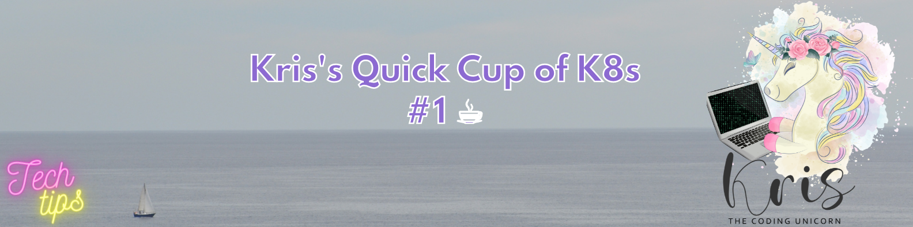
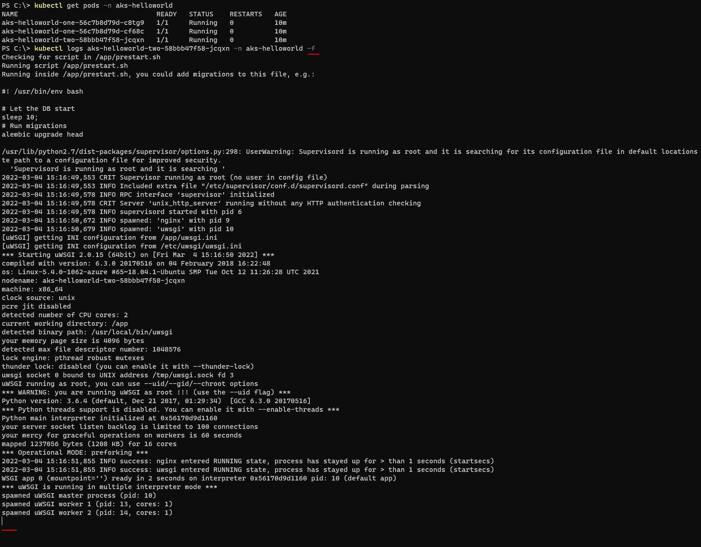
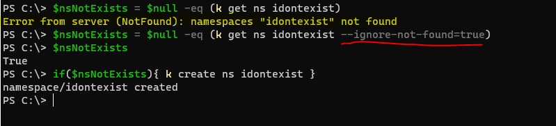
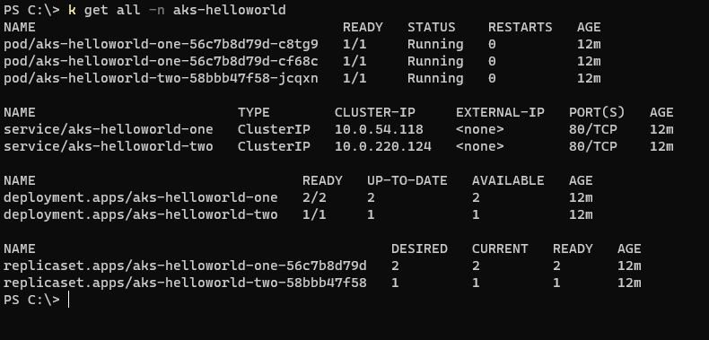

Kris's Quick Cup of K8s #1

Starting a totally new Tech Tips subsection feels great - especially when it's going to be purely dedicated to Kubernetes utilizing Azure Kubernetes Service (AKS) for demo purposes! :-)
In this first edition I would like to demonstrate 4 helpful commands that can make your life easier when working with Kubernetes. AKS will be my Kubernetes distribution of choice.
#1 - Live streaming of Pod logs
Sometimes it can be really useful to monitor application's logs, for instance when there are errors happening during application's start-up or while it's up and running. If you use kubectl logs <pod_name> -n <namespace> you will only get what's been logged until the execution of command. In order to stream logs and follow them in real-time you will need to use -f flag ("f" for "follow") with kubectl logs command, i.e. kubectl logs <pod_name> -n <namespace> -f.
In the screenshot below you can see the result of the command above. To abort log streaming click Ctrl+C.

#2 - Get non-existent Namespace without erros
Normally if you attempt to get a Namespace that doesn't exist, an error will be returned saying that namespace wasn't found. So if you're writing an automation script where you want to create a Namespace if it doesn't exist, you will need to think about how to handle an error that's being returned back from kubectl command. Fortunatelly there's a flag that can suppress this error and instead return nothing if a Namespace doesn't exist - kubectl get ns <namespace> --ignore-not-found=true.
That's the difference you can see in the example below: 
#3 - Get all resources in a Namespace
If you want to check all resources that have been created in a Namespace, kubectl get all -n <namespace> command can come in pretty handy. Please note that custom resources associated with the respective Namespace will not be displayed as part of this command.
In the example below I've deployed a test application in my AKS cluster and am retrieving all standard resources that were created in application's Namespace - "aks-helloworld" :

#4 - Retrieve and clean up Evicted Pods
Sometimes you may have a lot of Pods in the cluster with a specific status that may need clean-up. You could have deleted one and one Pod but why do that when with 2 PowerShell commands you can clean up all Pods at once? For instance, let's use Pods with status "Evicted" as an example. I will use first command to retrieve all Pods in "testapp" Namespace where reason is set to "Evicted" and save the result to a variable called "evictedPods". Then with command #2 I will delete each of the retrieved Evicted Pods. The same approach can be used for any other status, you will just need to confirm with Pod metadata that you're filtering Pods based on the correct property because in some cases different properties may be used to set Pod's state.
$evictedPods = ((kubectl get pods -n testapp -o json | ConvertFrom-Json).items | Where-Object {$_.status.reason -eq "Evicted"})
foreach($pod in $evictedPods) {kubectl delete pods $($pod.metadata.name) -n testapp}
Thanks for reading and till next tech tip ;)